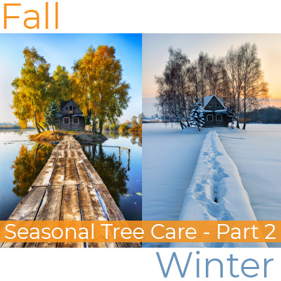

We’re back this month to discuss fall and winter tree care. It may seem like there isn’t much to do for your trees during these seasons. Trees, however, can benefit from many services that are best done while the tree is dormant or preparing for dormancy. One of the main tasks that is top priority in tree service for fall and winter is scheduling an assessment by a tree expert. All Barnegat tree companies agree that only an inspection by a professional can save your property from potential hazards.Fall
Fall is another great time in the garden and landscape. Because it is usually not an active growing season for most plants, it is a great time to perform maintenance. It is also a great time to plant new trees. Newly planted trees are very susceptible to suffering from drought and heat stress. Planting during the fall keeps them safe from the severity of summer. Plus, it gives them all of autumn to prepare for winter. For the rest of your trees, during this season you should fertilize, freshen-up, prune, and as always, inspect.
Fertilize – Feeding your young trees now will give them strength over winter. The healthier the tree and roots, the safer the tree. It is important to improve the condition of the soil for trees. Better soil means stronger roots. Stronger roots mean healthier trees and healthier trees are better able to resist pests and diseases.
Freshen-Up – This is an important step this time of year. It is important to rake and remove any dead leaves. One, in case they were contaminated with any diseases or pests, it is best not to leave them laying around, especially close to the tree. Second, piles of dead leaves can retain moisture, which we already know is a great place for fungi and mold and mildew to grow. It’s also a good idea to freshen your mulch pile and ensure there is a 3-inch ring of space around the trunk where no mulch is touching the base of the tree.
Prune – Fall is the perfect time of year to remove extra limbs. If you are unsure if your trees need any branches removed, give us a call to come take a look. We’re one of the top Barnegat tree companies because of the service we provide. Don’t take our word for it though. Check out our testimonials to see what our clients have to say!
Inspect – Taking a close look at all your trees in the fall is best. We can help you inspect all your trees and decide what, if anything, needs to go. Doing this now will remove any limbs or branches that could possibly cause damage during a severe winter storm. Healthy, properly trimmed trees are much less of a liability. Also, some young trees may need some additional reinforcement and fall is a great time to add support cables.
Winter
Although you would assume that trees would be fairly care-free during winter, there is still some maintenance tasks that are best done in winter in order to protect them from the harshness of winter. The months of winter are perfect for treatment, pruning, and planning.
Treat Evergreens – Protecting evergreens from losing as much water as possible is best done with an application of anti-desiccant. As far as evergreens go, this is something many homeowners overlook and their trees may be just fine. But, for healthy, lush, gorgeous evergreens, give them a boost by preventing moisture loss. Although there are less pests, there are still pests. Insects like leafhoppers and birch borers need to be treated.
Prune and Trim – Tree companies in Barnegat remain busy during the colder months. Pruning and trimming during dormancy allows them to heal better. This is because they can focus solely on ailing the wound rather than fighting off pests and diseases. Plus, with the ground frozen, your property can be better protected from our heavy machinery. Lastly, even though all the branches are bare, our tree experts can better asses which branches need to go.
Plan – Spring follows winter. After receiving an assessment from a tree expert, you can begin to plan you summer to-do list. Hopefully at this point your trees have been examined and trimmed properly so you get to focus on the rest of your garden. Keep in mind when assessing your sun and shade that if you recently had trees trimmed so your shade patterns may be different.
We’re Among the Leading Barnegat Tree Companies
We’re one of the best tree companies in Barnegat for many reasons. We’re fully licensed and insured, have all our own equipment, and provide a wide variety of tree services at fair prices. Contact us anytime to discuss your tree care needs!